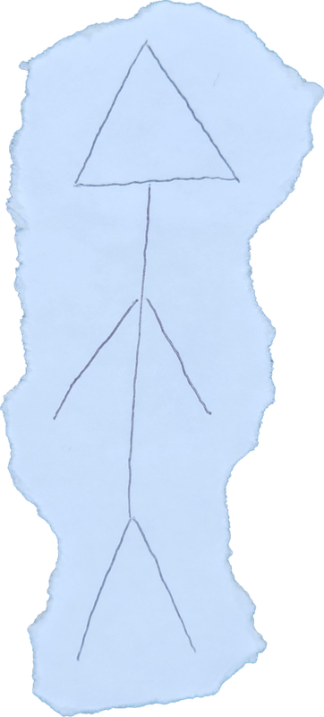
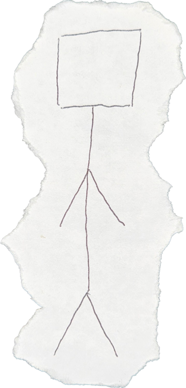
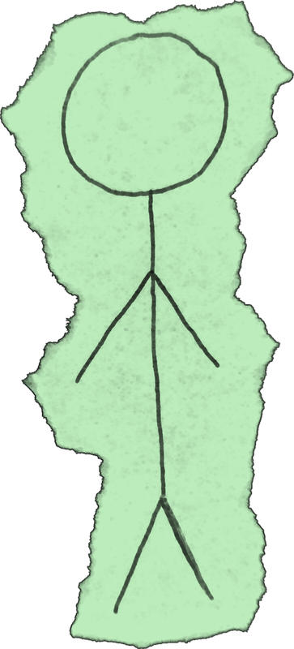

Hugo △
L'artiste
Caractère : passionné, impulsif, toujours enthousiaste. Il s'enflamme devant chaque toile.
Dans la visite : il ressent les œuvres et fait voir l'énergie, la vitesse, le mouvement.
Sa forme : un triangle, pointu et tourné vers l'avant, comme son élan.
« On entend presque le vacarme ! »

Claire ▢
La critique d'art
Caractère : posée, précise, un brin sceptique et pince-sans-rire.
Dans la visite : elle donne les titres, les dates, les lieux et le contexte historique.
Sa forme : un carré, stable et structuré, comme ses explications.
« Ironique, de les exposer dans une galerie, non ? »

Lou ◯
La visiteuse
Caractère : curieuse, spontanée et drôle. Elle découvre le futurisme pour la première fois.
Dans la visite : elle pose les questions que le public se pose et compare tout à la vie de tous les jours.
Sa forme : un rond, doux et ouvert, comme sa curiosité.
« Un peu comme quand le métro arrive et que tout le monde pousse… »